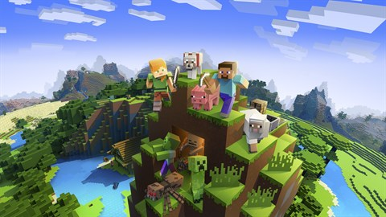
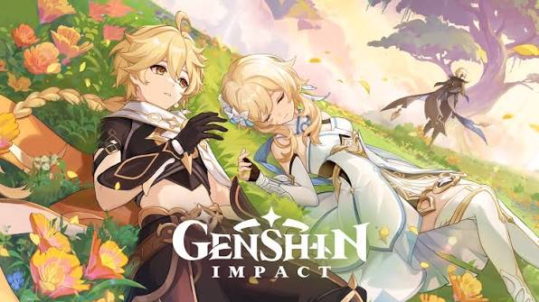

IDE & éditeurs
- VS Codeéditeur de code
- IntelliJ IDEAIDE de JetBrains
- Sublime Textéditeur léger
Salut, moi c'est…
Développeur français, j'écris surtout en TypeScript, mon langage principal, et j'apprends Java et Python à côté. J'aime comprendre ce qui se passe sous le capot : peu de magie, pas de framework empilé par réflexe, juste du code propre, lisible et pensé avec soin.
Je publie du code open source, comme dragons-of-legends.js, une librairie NPM téléchargée plus de 2 500 fois. Une idée, un projet ou une question de code ? Viens m'en parler sur Discord.
(mon avatar Discord)
ma boîte à outils
Pas de barres de pourcentage : voici ce que j'utilise, et ce que j'explore en ce moment.
mon établi
L'environnement dans lequel je travaille au quotidien.
ce que j'ai construit
Deux réalisations, présentées honnêtement : une librairie open source mise en pause, et le site que tu es en train de lire.
Librairie NPM open source conçue pour simplifier la création d'APIs pour serveurs MMORPG.
2 500+ téléchargements · projet actuellement en pause
Portfolio personnel sur-mesure, développé en HTML/CSS pur, axé sur le minimalisme et la performance.
(oui, c'est ce site)
quand je débranche
Quand je ne code pas, je joue, je construis et je regarde des animes.

2000+ heures
Passion pour le craft et la création.

~300 heures
Automatisation et logique.

~100 heures
Exploration et ambiance.

~50 heures
Le jeu du moment.
Grand amateur d'animes pendant mes sessions de pause dev.
où me trouver
Mes profils, au même endroit. Discord reste le plus rapide.
message direct
Mon canal principal de communication. Question, projet ou simple discussion code ? Envoie-moi un message direct sur Discord.
Mon identifiant Discord
.player_green
nom d'affichage : martin92yt
dernière mise à jour : 23 octobre 2026
Site édité à titre personnel et non professionnel par Martin92yt (pseudonyme). L'éditeur a choisi de rester anonyme : aucune adresse e-mail ni adresse postale n'est communiquée.
Martin92yt (pseudonyme).
Le contact s'effectue exclusivement via Discord : .player_green (nom d'affichage : martin92yt).
Le site est hébergé par Vercel Inc., 440 N Barranca Avenue #4133, Covina, CA 91723, États-Unis — vercel.com.
Conformément à l'article 6 de la loi n° 2004-575 du 21 juin 2004 (LCEN), l'éditeur, personne physique non professionnelle, a communiqué ses éléments d'identification à l'hébergeur.
Le contenu de ce site (textes, visuels, code, illustrations) est la propriété de son auteur, sauf mention contraire. L'avatar du site est un objet de la boutique Steam, acquis légalement : il n'est pas une création de l'auteur et reste soumis aux droits de son créateur. Toute reproduction sans autorisation préalable est interdite. Les projets open source présentés, dont dragons-of-legends.js, restent soumis à la licence indiquée dans leur dépôt ou sur NPM. Les noms de jeux, marques et visuels cités appartiennent à leurs propriétaires respectifs et ne sont utilisés qu'à titre illustratif.
Les liens vers des sites tiers (Discord, GitHub, YouTube, NPM, etc.) sont fournis à titre informatif ; l'éditeur n'est pas responsable de leur contenu.
dernière mise à jour : 23 octobre 2026
Martin92yt (pseudonyme), éditeur du site. Contact exclusivement via Discord : .player_green.
Ce site ne collecte aucune donnée personnelle : il n'y a ni formulaire, ni compte, ni outil de statistiques.
Ce site ne dépose aucun cookie. Les services tiers cités ci-dessous restent soumis à leurs propres politiques.
Le site est hébergé par Vercel, qui peut conserver des journaux techniques (adresse IP, date de connexion) pour des raisons de sécurité. Les polices, l'avatar et les visuels sont hébergés avec le site : aucun service tiers ne reçoit l'adresse IP du visiteur lors du chargement des pages.
Les informations transmises par message ne servent qu'à répondre et ne sont ni revendues ni partagées. Le traitement des messages Discord est régi par la politique de confidentialité de Discord Inc.
Conformément au RGPD, toute personne peut demander l'accès, la rectification ou la suppression des données la concernant en contactant l'éditeur via Discord (.player_green).